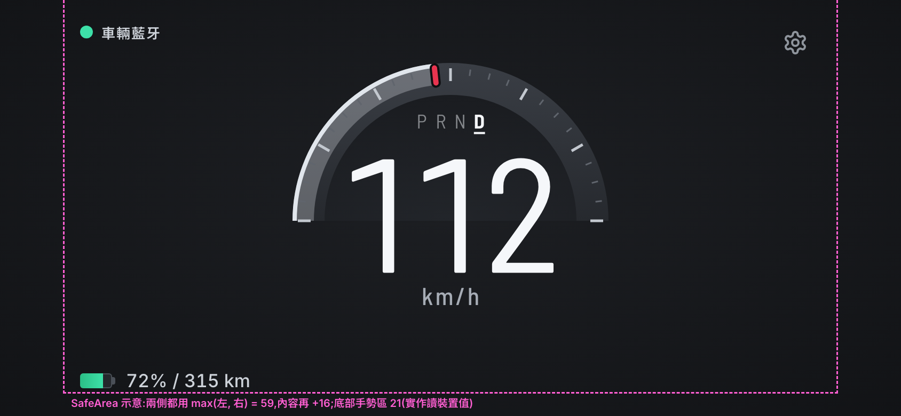
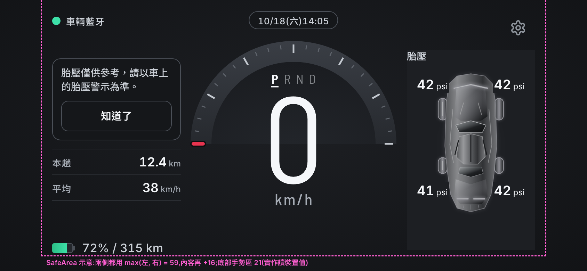

主畫面改版:三個方向(第十二輪)
請老闆選
ux 建議 C。開車時只比現在多一張卡,而且不用碰;量表變圓,比較接近你喜歡的 Dashla。安全上 B 最好、C 第二(safety 08 階段 3 同樣排序),A 行駛中資訊最多(時間 + 兩塊面板 + 環上圖示和短字)。[07 §3.5、08 S12-09]
要請老闆回答
- 選 A、B 還是 C?選方向也是重挑量表(L72):A 細圓環、B 保留現在的扇形(L49)、C 270° 圓環。
- 開車時要不要看胎壓?現在的規則是只在停車看(L34),三個方向都照這條畫。[07 Q2]
- 只有選 A 才要回答:開車時上方要不要放時間?[07 Q9]
修訂 1(2026-10-25,依 L73)
safety 審完(08「階段 3 審查」,0 P0 / 8 P1 / 1 P2),主持人裁定 L73,這一版照著改。改之前的頁面和 9 張 PNG 原封不動放在 frames/main-redesign/v1/。
- 來源標示(S12-04):GPS 備援改回 DESIGN.md 的「◐ GPS · 藍牙資料過期」(英文 GPS · Car data stale);從沒連過車時是「● GPS」(這輪沒有那張畫面)。
- 環上圖示加短字(S12-01、S12-02、Q3):亮起時量表正下方一行 15 px 短字:「後車廂開著」「前車廂開著」「車門開著」「超過 110（自訂）」;幾格一起亮時合成一句(07 §2.2)。後車廂的掀蓋畫大(長約 8、寬 2.8 px,原本約 4、2);車門改成車頭朝上的俯視圖,右前門往外打開約 55°。自訂門檻還是中性的小錶,不用相機、路牌、▲ 或超速色。車速數字的大小和位置沒動(自查逐字比對)。
- 字級(S12-03):說明小字 12 → 13 px(行程註記、SafeArea 標示),停車的標題按鈕 14 → 16 px,點擊區照舊 44 高。單位、胎壓單位的 12 px 是 DESIGN.md 明訂的例外,沒改。
- 用電分組(S12-05):A、B 停車的行程分成兩組:GPS 那組(本趟、平均、最高、行駛時間)+「距離和車速由手機 GPS 計算」,隔一條線,「本趟電量變化 −4%」+「依車輛藍牙電量計算」。為了不用捲動,這兩張的行程列高固定 28(上下留白 7 → 2),字級沒縮。C 停車只有 GPS 三項,只換成新的註記。
- 未知逐格(S12-06):前車廂、後車廂、車門各自有開、關、未知;未知畫那一格自己圖形的虛線外框(灰、不填色),不加短字,讀屏逐格唸「車門狀態未知」。每個方向多一張 ④「行駛・車輛藍牙:後車廂開著 + 車門未知」。沒連上車時照 L71 整組不畫。
- 說明:每個方向補上自訂門檻的規則(顯示車速大於 110 亮、小於或等於 110 立刻熄、熄後 3 秒內不再亮,S12-08)和 Q11 導航窄例外(A、C);A 寫明「行駛中資訊最多」(S12-09,設計不改);C 右卡維持固定框(Q1)。
- lead 補裁定(2026-10-25,回 visual 的三個問題):① 來源標示的英文用「GPS · Car data stale」,和 01 §6.5、app 現有的字串(
ios-app/App/DriveScreen.swift)一致,L73 已更正;這頁原本三處的舊英文都改了。PNG 只畫繁中,不用重出。② A、B 停車的行程列(列高 28)和 ③ 四格全亮時的短字(13 px)照現在給老闆選,都放進選定方向後的驗證(S12-07)。 - 這次不做:S12-07 的完整驗證(選定方向後照 08「選定方向後的最低驗證組」補);ux 的 Q14(大字時短字列放不下)、Q15(未知格要不要加字)也留到那時。
現行(保留參考)
第八輪定案的 C「扇形」(L49)。下面三個方向都拿這兩張比。兩張是原本的 PNG,直接放進來,沒有重畫。

P R N D;左下電量 / 續航;兩側沒有東西。檔案:frames/landscape/S04-b-ble.png
frames/landscape/S06-b-parked-ble-p.png三個方向
三個方向用同一組範例值(07 §3 開頭),方便比較:① 行駛・車輛藍牙:112 km/h、D、72% / 315 km、後車廂開著、車上導航中;② 行駛・GPS 備援:118 km/h、自訂門檻開在 110、來源「◐ GPS · 藍牙資料過期」;③ 停車 P:0 km/h、胎壓 42 / 42 / 41 / 42 psi、行程(兩組)、胎壓說明和換卡提示都已經按過;④ 同 ①,但車門那幾個欄位沒回來(車門未知)。
環上 4 格怎麼看(三個方向一樣,07 §2.2、L71、L73)
固定 4 格,在錶的下方,左右各兩格,正下方留給 ▲(v1 不開)。只有「成立」才亮,不能點;每格形狀不同,不靠顏色,全部是中性的 text.primary。亮起時量表正下方多一行短字,不用點開就看得懂。下面圖例放大 2 倍;畫面上實際是 22 px。
方向 A「雙翼」
細圓環錶 + 左右兩塊面板 + 上方時間;停車時選內容,開車時鎖住。參考 Dashla、BMW iDrive 8 的 Drive 版面。改 L49 的量表形狀。三個方向裡行駛中資訊最多(時間、兩塊面板、電量、環上圖示和短字;08 S12-09,L73 不改,留給老闆比較)。
| 面板預設 | 停車:左「行程」(可換成「車況」),右「胎壓」(可換成「車上導航」「正在播放」)。開車:左一定是行程;右用停車時最後選的那張,如果是胎壓(開車時不能顯示,L34)就依序選:導航中 → 車上導航,播放中 → 正在播放,都沒有 → 空白。只有 GPS 時右邊空白。 |
|---|---|
| 怎麼換 | 只在停車畫面:點標題「胎壓 ⌄」打開卡名清單選一張,或上下滑一次換一張;標題右邊的直排小點表示第幾張。 |
| 開車時 | 進入行駛時選一次,整趟不換卡,只原地更新數字;碰面板沒反應、標題不是按鈕。導航結束就在原位寫「車上沒有在導航」。測速提醒出現時,右邊面板暫時換成側光條,結束再換回來(07 §2.4)。例外(L73 Q11):進入行駛時右邊面板不是導航,這一趟第一次收到新鮮、有效的車上導航時,可以自動換成導航一次(≤0.2 秒淡入淡出,減少動態時直接換);之後到 P 檔前不再換,取消導航、改目的地、重新連上藍牙都不會再給一次機會;只有一次有效的 P 檔停車才重新給;資料失效時照樣撤下內容,不為了不換卡留著舊值。 |
| 自訂門檻 | 設定裡打開才有(預設關)。顯示的車速大於 110 就亮,小於或等於 110 立刻熄、不拖延;熄了之後 3 秒內不再亮(免得在 110 上下一直閃)。用畫面上顯示的整數、顯示的單位比;沒有有效車速時也立刻熄。亮時:環上小錶 + 短字「超過 110（自訂）」+ 錶上 110 的刻痕;數字不變色、不閃、不發聲(L73 S12-08)。 |
方向 B「靜行」
開車時跟現在幾乎一樣,只多環上圖示;停到 P 檔,兩側才變成可以換的面板。參考 Polestar 2 和 BMW 的 Calm、Tesla 的停車畫面。量表不改(L49)。
| 面板預設 | 停車:左「行程」(可換成「正在播放」「車上導航」),右「胎壓」(可換成「車況」)。 |
|---|---|
| 怎麼換 | 和 A 一樣:停車時點標題或上下滑。 |
| 開車時 | 沒有面板(所以用不到 Q11 導航例外)。左右欄空白,右欄只給測速提醒(同現行)。進停車畫面時兩側淡入 ≤200 ms,離開時淡出 ≤300 ms;減少動態時直接換。 |
| 自訂門檻 | 設定裡打開才有(預設關)。顯示的車速大於 110 就亮,小於或等於 110 立刻熄、不拖延;熄了之後 3 秒內不再亮(免得在 110 上下一直閃)。用畫面上顯示的整數、顯示的單位比;沒有有效車速時也立刻熄。亮時:環上小錶 + 短字「超過 110（自訂）」+ 錶上 110 的刻痕;數字不變色、不閃、不發聲(L73 S12-08)。 |
方向 C「單卡」
C 的扇形質感做成 270° 圓環;右邊一張卡,開車時依情境自動選一次,之後不換、不用碰;停車時才能換。參考 Tesla 中控的卡片、DriveCluster 的資料組合、BMW Drive 的中間可變區。改 L49 的量表形狀(質感沿用 C)。
| 面板預設 | 停車:右卡「胎壓」(可換成「車況」「車上導航」「正在播放」),記住最後選的那張;左欄固定是行程(同現行,不能換)。 |
|---|---|
| 怎麼換 | 和 A 一樣,只有右卡能換。 |
| 開車時 | 進入行駛時選一次:導航中 → 車上導航;否則播放中 → 正在播放;否則 → 行程。只有 GPS → 行程。之後整趟不換,只原地更新。右卡維持固定框(185 × 288,行駛和停車同一框),行駛中內容少、下面留白可以(L73 Q1)。測速提醒時整張卡連底色一起收起,只留側光條(07 §2.4),結束後回到原本那張。例外(L73 Q11):進入行駛時右卡不是導航,這一趟第一次收到新鮮、有效的車上導航時,可以自動換成導航一次(≤0.2 秒淡入淡出,減少動態時直接換);之後到 P 檔前不再換,取消導航、改目的地、重新連上藍牙都不會再給一次機會;只有一次有效的 P 檔停車才重新給;資料失效時照樣撤下內容,不為了不換卡留著舊值。 |
| 自訂門檻 | 設定裡打開才有(預設關)。顯示的車速大於 110 就亮,小於或等於 110 立刻熄、不拖延;熄了之後 3 秒內不再亮(免得在 110 上下一直閃)。用畫面上顯示的整數、顯示的單位比;沒有有效車速時也立刻熄。亮時:環上小錶 + 短字「超過 110（自訂）」+ 錶上 110 的刻痕;數字不變色、不閃、不發聲(L73 S12-08)。 |
調查摘要
ux 在 07 §1 查的 5 個參考(查詢日期 2026-10-25)。這一輪 visual 沒有另外查。
| 參考 | 借 | 避開 |
|---|---|---|
| Dashla(iPhone;使用者截圖) | 圓錶在正中、兩側各一塊面板;面板可以鎖住;一塊面板只講一件事;電量放左下 | 上方列塞 8 種狀態;連線只用紅綠點;浮動按鈕開車時也能按;沒配對照樣畫 P R N D 和 0 |
| DriveCluster for Tesla(App Store 說明) | 車速 + 檔位 + 電量 + 胎壓 + 導航摘要 + 歌名這一組就夠用,和我們拿得到的幾乎一樣 | 方向燈、盲點、輔助駕駛圖示(拿不到);胎壓用顏色分正常 / 異常;專輯封面 |
| Tesla Model 3 中控車況區(手冊 2025-04-03 存檔) | 「狀態成立才亮」的指示燈;媒體、胎壓、行程做成一張一張的卡;車子俯視圖只在停車出現 | 卡片左右滑(手機橫放時和返回手勢搶);偵測速限圖示;照抄 Tesla 介面 |
| Polestar 2 駕駛儀表(手冊) | Calm:開車時把多餘的東西拿掉;換模式用固定按鍵,不在螢幕上滑 | 地圖蓋滿整個儀表 |
| BMW iDrive 8(BMWBLOG 2021-03-15) | 同一套資訊分幾種密度讓駕駛選;Calm 只留車速 | Gallery 把錶縮小讓位給小工具(違反 L39);每個版面換一套配色 |
比較和建議
| A 雙翼 | B 靜行 | C 單卡 | |
|---|---|---|---|
| 量表 | 整圈細圓環(改 L49) | 現行扇形 + 下半圈細弧(不改) | 270° 圓環,質感沿用扇形(改 L49) |
| 開車時比現在多看的 | 時間 + 2 塊面板 + 環上圖示和短字(三個裡最多) | 只有環上圖示和短字 | 1 張卡 + 環上圖示和短字 |
| 開車時看得到導航、歌名 | 看得到(右面板) | 看不到 | 看得到(右卡) |
| 停車可以換的面板 | 左右兩塊 | 左右兩塊 | 只有右卡 |
| 測速提醒放哪 | 借右面板 | 右欄(同現行) | 借右卡(卡收起) |
| 工程(#47–#49) | 量表重畫,紅針改成環上紅刻 | 不用搬 | 量表重畫,紅針沿用 |
| 安全排序(ux 07、safety 08 相同) | 3 | 1 | 2 |
建議:C(同意 ux)。畫完以後看得到的三點:① A 最像 Dashla,但行駛中資訊最多:開車時畫面上有 5 組東西(來源、時間、兩塊面板、電量),是三個裡看一眼要掃最多地方的(08 S12-09);② B 最安靜、工程最少(#47–#49 不用搬),可是開車時看不到導航和歌名,等於只改了停車畫面,和你想要的 Dashla 差最多;③ C 的圓環最接近 Dashla,又留著扇形的刻度、填色和紅針,開車時只多右邊一張不用碰的卡。C 的代價是帶要薄 2 px(內徑 118 → 120)才離數字 9 px,而且右卡開車時大半是空的(L73 Q1:維持固定框,留白可以)。如果老闆最在意安全、不在意開車時看導航,就選 B。
08 M12-01–M12-14 自己對一遍
「頁面自查」是這頁打開時自動量的(最下面);「PNG 驗不了」的要等動態稿或實機(M12-14)。
| 項目 | 這次怎麼做 | 狀態 |
|---|---|---|
| M12-01 | 12 張的數字、單位、P R N D 和現行 gC 是同一段程式、同樣輸入畫出來逐字相同;換方向、換來源、行駛 ↔ 停車,數字位置都一樣。修訂 1 加的短字列在量表區外,沒有動到數字。 | 頁面自查 |
| M12-02 | 0–240 每個車速量數字墨跡:A 離圓環 ≥19、C 離帶 ≥9.3(帶變薄)、B 離扇形亮的部分 ≥12.7;環上圖示離數字 ≥41。667、英文、大字、夜間還沒畫。 | 844 已量;其他待補圖 |
| M12-03 | 每個方向寫了面板預設、怎麼換;換卡條件照現行停車畫面(07 A8),開車時標題不是按鈕。 | 規則;PNG 驗不了 |
| M12-04 | 開車時只在進入行駛時選一次,不輪播、不滑入(07 §2.3)。 | 規則;PNG 驗不了 |
| M12-05 | 前車廂、後車廂、車門逐格:開著 = 實心 + 短字、關著 = 不畫、連著車但那一格沒資料 = 那一格自己圖形的虛線外框(三張 ④);每格形狀不同,灰階也分得出;圖示 15.38:1、虛線 5.40:1;讀屏逐格(「後車廂開著」「車門狀態未知」)。原尺寸不看圖例的辨認測試還沒做(S12-07)。 | 頁面自查;辨認測試待選定後 |
| M12-06 | 各自固定位置(07 §2.4);④ 畫了「後車廂開著 + 車門未知」同時出現、不疊格。後車廂 + 自訂門檻 + 測速提醒 + 部分過期那張留到選定後(S12-07)。 | ④ 已畫;其他待補圖 |
| M12-07 | 三張 ② 沒有檔位、電量、胎壓、車況圖示、導航、電量變化;行程寫「距離和車速由手機 GPS 計算」;來源標示一直在,寫「◐ GPS · 藍牙資料過期」(L73 S12-04)。 | 頁面自查 |
| M12-08 | 藍牙恢復時各欄各自等新鮮讀值(07 §4)。 | 規則;PNG 驗不了 |
| M12-09 | 中性圖示 + 短字「超過 110（自訂）」+ 110 刻痕,數字不變色、不是 ▲、不用相機或路牌;讀屏「超過自訂門檻，每小時 110 公里」;不寫「超速」「限速」。 | 頁面自查 |
| M12-10 | 顯示車速大於 110 亮、小於或等於 110 立刻熄、熄後 3 秒內不再亮(L73 S12-08,07 §2.2 已改);換單位、換來源用新的顯示值比。 | 規則;PNG 驗不了 |
| M12-11 | 導航只有目的地、分鐘、距離、「預估抵達電量」;沒有歌詞、地圖、轉彎箭頭、封面。 | 頁面自查 |
| M12-12 | 胎壓面板的程式原封不動(tireAudit 0 問題);說明卡這次假設已按過。 | 胎壓說明卡同時出現的那張待補 |
| M12-13 | 上方列只有 A 有:開車放時間、停車加車外溫度;來源標示不被蓋、不變成色點。 | 頁面自查 |
| M12-14 | 停車時標題是有名字的按鈕「行程 ⌄」「胎壓 ⌄」(16 px)+ 讀屏「胎壓，第 1 張，共 3 張，按鈕」,點擊區 44 高、不碰齒輪。 | 頁面自查;大字、夜間、動態待選定後(S12-07) |
和 07 原稿不一樣的地方(量過才改;07 修訂 1 已改成這些值)
token
假設
- ①、③、④ 的自訂門檻是關著的(預設,07 §5);只有 ② 開在 110。所以 ① 開到 112 也不會亮。
- ④ 的「車門未知」= 連著車,但車門那幾個欄位沒回來或超過 30 秒沒更新(07 §2.2);前車廂關著,不畫。
- 短字列不給讀屏(
aria-hidden):讀屏唸每一格自己的句子,和短字同一句(07 §5),免得唸兩次。 - 2026-10-25 是星期日,日期膠囊寫「10/25(日)14:05」。
- 開車時面板標題是普通字(灰、沒有 ⌄、沒有小點);停車時才是按鈕(青色 + ⌄ + 小點,點擊區 44 高)。青色照 L55 只給能按的東西,所以看得出現在能不能換。
- 胎壓說明和換卡提示都已經按過「知道了」(07 §3 ③),不畫。
- 這一輪只畫 844 × 390、繁中、白天、預設字級(07 A9)。667、英文、夜間、大字、「沒資料」、全部未知、「測速提醒同時出現」的畫面,選定方向後照 08「選定方向後的最低驗證組」再畫(L73 S12-07)。
待確認
- 這一輪沒有了。已經回答、從這裡拿掉的:visual Q1 → L73 Q1 維持固定框;Q2 → S12-05 分組(已畫);Q3 → 車門改車頭朝上的俯視圖(已畫);07 Q11 → 窄例外(已寫進 A、C);來源英文 → 「GPS · Car data stale」;A、B 停車行程列、四格全亮的短字 → 照現在給老闆選,留到 S12-07(見修訂 1 最後兩條)。
畫面上的字(中 / 英)
PNG 只畫繁中;英文照 07 §5(L73 的字逐字照抄),這裡列這 12 張用到的。
| 位置 | 繁中 | 英文 |
|---|---|---|
| 面板標題 | 行程 ・ 車上導航 ・ 胎壓 | Trip ・ Car navigation ・ Tire pressure |
| 行程:GPS 那組 | 本趟 ・ 平均 ・ 最高 ・ 行駛時間 0:18 | Trip ・ Avg ・ Max ・ Drive time 0:18 |
| 行程:GPS 那組的註記 | 距離和車速由手機 GPS 計算 | Distance and speed from phone GPS |
| 行程:電量變化(A、B 停車) | 本趟電量變化 −4% | Charge change this trip −4% |
| 行程:電量變化的註記 | 依車輛藍牙電量計算 | From Car Bluetooth charge |
| 導航 | 台北車站 ・ 18 分 ・ 12 km ・ 預估抵達電量 64% | (name from the car) ・ 18 min ・ 12 km ・ Est. arrival charge 64% |
| A 停車上方列 | 車外 23° | Outside 23° |
| 來源標示 | 車輛藍牙 ・ GPS · 藍牙資料過期 | Car Bluetooth ・ GPS · Car data stale(lead 裁定,同 01 §6.5 和 app 現有字串) |
| 環上短字(一格) | 後車廂開著 ・ 前車廂開著 ・ 車門開著 ・ 超過 110（自訂） | Rear trunk open ・ Frunk open ・ Door open ・ Over 110 (custom) |
| 環上短字(幾格一起亮,例) | 後車廂、車門開著 ・ 超過 110（自訂） | Rear trunk, door open · Over 110 (custom) |
| 讀屏:環上圖示(逐格) | 後車廂開著 ・ 超過自訂門檻，每小時 110 公里 | Rear trunk open ・ Above custom threshold, 110 km/h |
| 讀屏:某一格未知 | 前車廂狀態未知 ・ 後車廂狀態未知 ・ 車門狀態未知 | Frunk status unknown ・ Rear trunk status unknown ・ Door status unknown |
| 讀屏:停車面板標題 | 胎壓，第 1 張，共 3 張，按鈕 | Tire pressure, card 1 of 3, button |
檔案清單
docs/design/frames/main-redesign.html:這一頁(?screen=<ID>單張、?screen=overview總覽)。docs/design/frames/main-redesign/:(844 × 390,2 倍);overview.png(1344 寬,最上面是「請老闆選」;每個方向 ①②③ 一列、④ 在下一列)。docs/design/frames/main-redesign/v1/:修訂 1 之前的頁面和 9 張 PNG + 總覽(safety 審的那一版),原封不動,之後不改。v1 的頁面要放回frames/才看得到現行兩張圖。docs/design/frames/main-redesign/export.sh:匯出上面 13 張 PNG。docs/design/frames/main-redesign/check-copy.sh:檢查從landscape-mockups.html複製的程式和 CSS 一字不差。- 沒改:
landscape-mockups.html、frames/landscape/、frames/其他檔、DESIGN.md、PRODUCT.md、.pen、01、02(雜湊比對過);07、08 是 ux、safety 這一輪自己在改的,我沒動。
自查(頁面打開時自動跑)和匯出設定
- 自查還沒跑完(要等字型載入)。
另外在頁面外跑過(headless Chrome,2026-10-25 修訂 1):① check-copy.sh:14 段從 landscape-mockups.html 複製的 CSS 和程式一字不差(gC 沒改,所以和現行同輸入同輸出;修訂前另外比過 48 組輸入的 SVG 雜湊)。② 1280、1440 寬各用 1 倍和 2 倍(匯出 PNG 的解析度)跑一次,390 寬用 iframe 跑一次(headless 視窗最窄 500),都是 0 問題。2 倍要另外跑:line-height normal 在 2 倍時每列會高 1–2 px,修訂 1 第一次輸出時 A、B 停車最後一行註記被裁掉 2–3 px,1 倍的自查沒抓到;現在列高寫死,自查也多一條「面板裡的字離底邊 ≥1」。③ 數字墨跡的量法沿用修訂前(打開 tnum 的字型量,和 PNG 差 ≤0.5 px)。④ PNG 匯出 3–5 次比雜湊:11 張每次相同;B-drive-gps.png、C-parked.png 偶爾出現另一種結果,只差字的反鋸齒(最大差 42 / 255,看不出來),資料夾裡放的是出現最多次的那一種。
匯出:docs/design/frames/main-redesign/export.sh。headless Chrome --window-size=844,390 --force-device-scale-factor=2,一張一個 ?screen=<ID>;總覽先用 --dump-dom 讀 data-h 當高度,寬 1344。要網路(Google Fonts、lucide)。13 張一次約 2–3 分鐘。